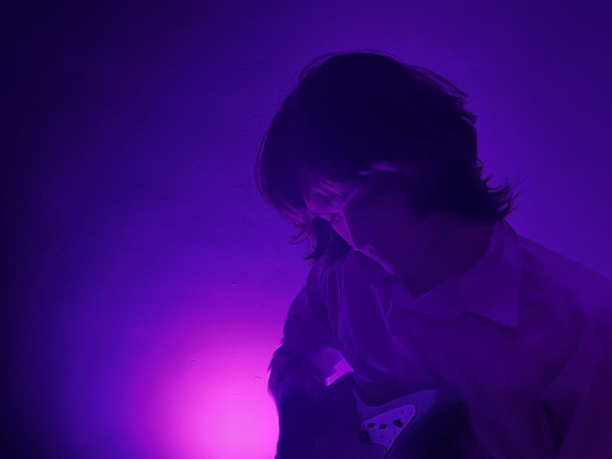

hello, it's me. i've thought about us for a long, long time... (what?)
hi, i'm quinn laurènce sol (they/them). i'm a third year Music & Technology student at HKU University of the Arts in Utrecht, but i currently live in Rotterdam.
i'm a producer, songwriter, sound designer/audio engineer and i'm what the cool kids call a multi-instrumentalist... i've been passionate about music and audio since i was young, and i've been
recording my own music since i was 20.
i mainly make music but i generally just do whatever gives me inspiration,
whether it's recoding my portfolio site for the 14th time, reading old dusty books i found in some vague second hand store, or finding the best way to cook with tofu.
in my free time i also like to read, philosophize about life stuff, freak out over analog gear, collect vintage records, cook, or just drift away whilst lying in a park somewhere (or anywhere else really!).
on the 18th of april i released my debut self-titled mini album indigo chamber, which is mostly dreamy, intimate ambient pop dealing with themes such as melancholy, yearning for the past and escapism.
it was mainly self-produced, written, recorded and mixed, with some help and collaborations of fellow HKU friends!
i'm also active at MlemRecords, which is a creative community of artists, musicians, producers, and designers. the mini album i was talking about earlier was also released on Mlem. check us out here!
if you want to know more about my work and what i've made/done, you can go to the portfolio section of my site and see some more stuffs i've worked on!
do you feel like making some cool art together? or do you need someone to produce/record/engineer? don't be afraid to shoot me an email/send me an insta DM!
let's discuss your project over a nice cup of coffee at your own pace!
email: sol dot quinten at gmail dot com
instagram: @quinnn.sol
signal: @indigochamber.01